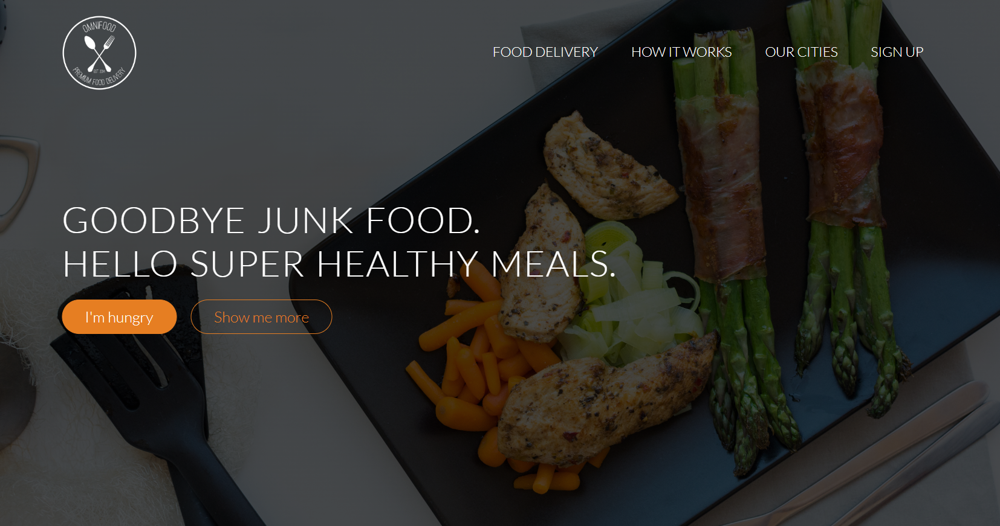
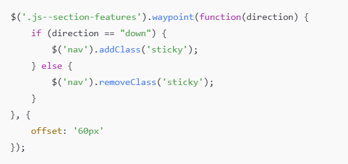
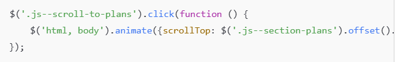
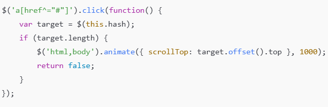
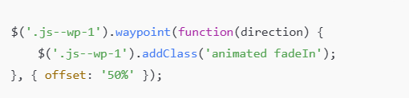
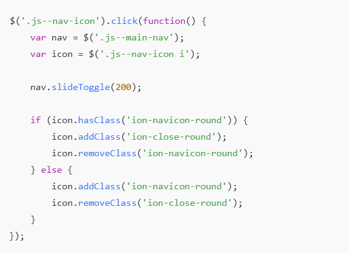

Project Title: Interactive Website
This project is a restaurant website built using HTML, CSS, JavaScript, and jQuery. I followed a tutorial to create it and added interactive features using jQuery and the Waypoints library. Below is a breakdown of the key functionalities and how they work.

1. Sticky Navigation
The navigation bar becomes sticky when the user scrolls past the "Features" section.
The following code adds a .sticky class to the < nav > when scrolling down and removes it when scrolling up:
- Interesting Part: offset: '60px' ensures that the sticky effect triggers before reaching the section.

2. Smooth Scrolling on Buttons
Clicking on certain buttons scrolls smoothly to specific sections of the page:
- Interesting Part: The animate() function ensures a smooth transition instead of jumping to the section instantly.

3. Navigation Scrolling (Anchor Links)
This allows smooth scrolling when clicking on navigation menu links:
- Interesting Part: The script prevents default anchor link behavior (return false;) and smoothly animates the page scroll.
Testing with a small user group helped refine the navigation structure before moving to high-fidelity prototyping.

4. Animations on Scroll
Different elements animate when they come into view using the Waypoints library and Animate.css:
- Interesting Part:The offset: '50%' ensures animations trigger when the section is halfway visible.

5. Mobile Navigation (Hamburger Menu)
Clicking the menu icon toggles the mobile navigation:
- Interesting Part:The script dynamically changes the icon from a menu (ion-navicon-round) to a close button (ion-close-round).

Conclusion
- This project helped me understand jQuery, smooth scrolling, waypoints, and animations on scroll.
- Following a tutorial made it easier to learn, but I also customized and improved certain parts, like refining animations and navigation behavior.
- Overall, it's a well-structured and functional interactive website for a restaurant!